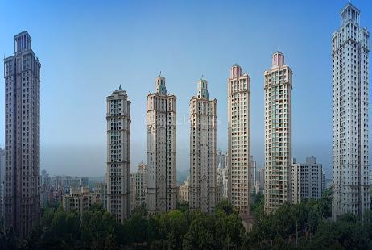
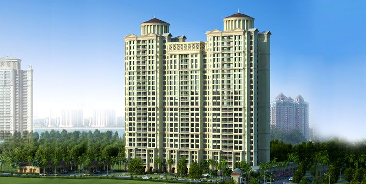
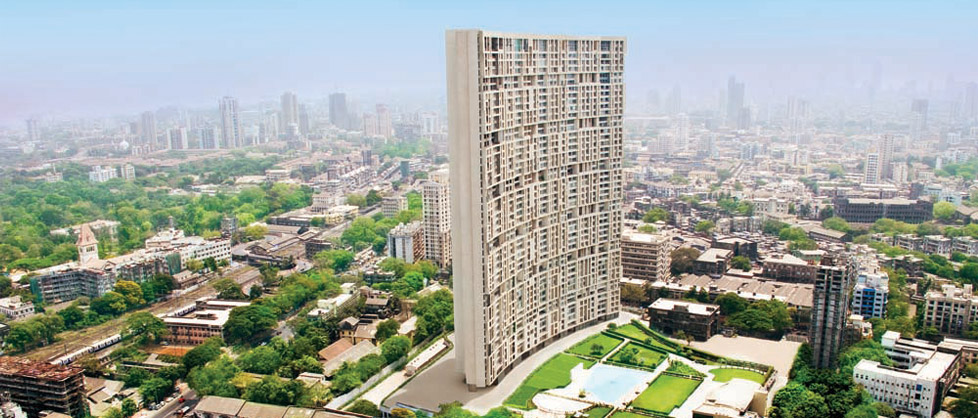

GUNJAN BUILDERS




COMPANY'S PROFILE
Gunjan Developers (M.P.) is ardent and determined on providing such a sense of pleasure by providing corporeal formations that conform to Gem's character and nature.
Gunjan Developers was launched by Mast. Piyush Lalwani. The company stepped on the path to glory in 2010, as the leading builders and developers of properties in M.P..
During the course of time, from one project a year, the company had grown to a stage of handling multiple projects at a time, thus establishing Gunjan Developers as one of the most revered developers in M.P.. Subsequently, it was converted into a Limited company as Gunjan Developers (M.P.) Limited.
India, a country of varied factions of people with invariable harmony possesses rich natural resources and cultural heritage as its exclusive asset. The commercial opportunities are plenty enough to attract investors from abroad too, to enter into various business ventures. Construction sector is one among such huge business enterprises.
Needless to say, the investors of any kind are quality conscious. And the acquirers obviously demand only the pre-eminent. Gunjan Developers (M.P.) Limited, is one among the very few developers in M.P. that follow inflexible international quality standards.
Gunjan Developers consist of over 1500 plus satisfied customers. The accomplishment of construction area has crossed over 1.5 million sq.ft. And the company is well known for having provided secured apartments, properties, flats and living spaces of various kinds in M.P.. Gunjan Developers is also prominent in providing properties for sale in M.P..